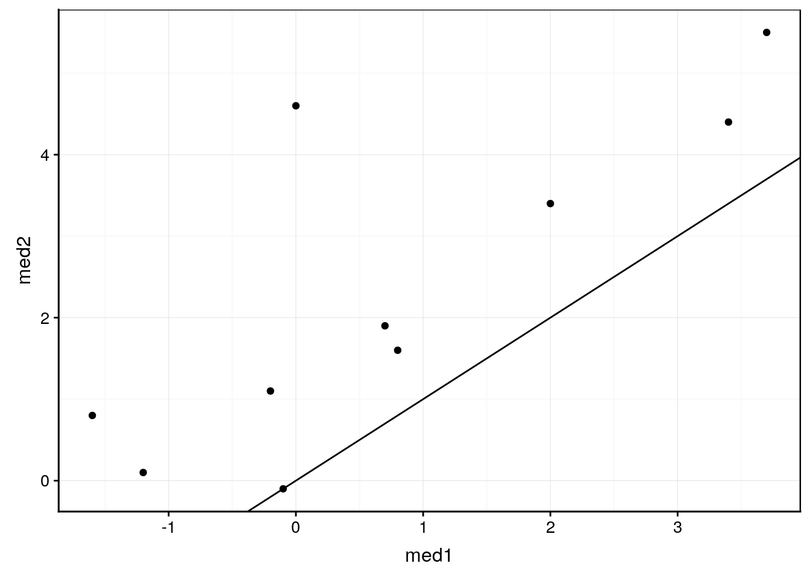

9.4 Variantes du test t de Student
A vous de jouer !
Afin d’appliquer directement les concepts vu dans ce module, ouvrez RStudio dans votre SciViews Box, puis exécutez l’instruction suivante dans la fenêtre console :
BioDataScience::run("09b_ttest_wmw")Nous venons de voir ce qu’on appelle très précisément le test t de Student indépendant bilatéral avec variances égales. Nous allons maintenant étudier d’autres variantes.
9.4.1 Variances inégales
Dans le test précédent, nous avons supposé que les variances entre les valeurs \(rear_F\) et \(rear_M\) étaient égales, mais rien ne dit que cela soit le cas46. Si nous ne voulons pas de cette contrainte, une variante du test permet de comparer deux moyennes même en présence de variances inégales : le test de Welch. Il consiste à ajuster les degrés de liberté en cas de variances inégales. Il suffit de préciser var.equal = FALSE.
t.test(data = crabs, rear ~ sex,
alternative = "two.sided", conf.level = 0.95, var.equal = FALSE)#
# Welch Two Sample t-test
#
# data: rear by sex
# t = 4.2896, df = 187.76, p-value = 2.862e-05
# alternative hypothesis: true difference in means is not equal to 0
# 95 percent confidence interval:
# 0.8085599 2.1854401
# sample estimates:
# mean in group F mean in group M
# 13.487 11.9909.4.2 Test unilatéral
Pour rappel, nous avions considéré ceci :
- \(H_0: \overline{rear_F} - \overline{rear_M} = 0\)
- \(H_1: \overline{rear_F} - \overline{rear_M} \neq 0\)
L’hypothèse alternative \(H_1\) est ici la plus générale. Parfois, nous avons plus d’information qui nous permet de dire que si \(H_0\) n’est pas rencontrée, \(\overline{rear_F} - \overline{rear_M}\) ne peut alors qu’être négatif (on parle de test unilatéral à gauche) ou positif (test unilatéral à droite). En effet, dans ce cas nous placerons la zone de rejet complètement à la gauche ou à la droite de la distribution.
En épluchant la littérature, nous réalisons que les crabes de la famille des Grapsidae dont L. variegatus fait partie ont systématiquement un arrière plus large chez la femelle lorsqu’un dymorphisme sexuel existe. Nous pouvons modifier nos hypothèses comme suit :
- \(H_0: \overline{rear_F} - \overline{rear_M} = 0\)
- \(H_1: \overline{rear_F} - \overline{rear_M} > 0\)
Notez la différence pour \(H_1\). Nous avons alors ici un test unilatéral à droite. Nous indiquons alternative = "greater". Pour un test unilatéral à gauche, nous utilisons alternative = "less".
t.test(data = crabs, rear ~ sex,
alternative = "greater", conf.level = 0.95, var.equal = FALSE)#
# Welch Two Sample t-test
#
# data: rear by sex
# t = 4.2896, df = 187.76, p-value = 1.431e-05
# alternative hypothesis: true difference in means is greater than 0
# 95 percent confidence interval:
# 0.9201205 Inf
# sample estimates:
# mean in group F mean in group M
# 13.487 11.990Notez que la valeur P a été divisée par deux par rapport au test bilatéral. Ceci est le résultat d’une répartition différente de l’aire de rejet qui est placée ici entièrement sur la droite (Fig. 9.7). Nous n’avons donc plus dû multiplier la valeur calculée par deux pour la répartir également de l’autre côté de la distribution.
Figure 9.7: Visualisation de la distribution de Student réduite sous l’hypothèse nulle d’un test unilatéral à droite au seuil de 5%. Toute la zone de rejet est à droite.
Un autre exemple évident de test unilatéral : si nous mesurons la concentration d’une substance en solution \([S]\) et que nous nous demandons si cette substance est présente, nous aurons :
- \(H_0: \overline{[S]} = 0\)
- \(H_1: \overline{[S]} > 0\)
Ce test sera nécessairement unilatéral à droite car des concentrations négatives ne sont pas possibles.
9.4.3 Test t apparié
Dans le cas du test indépendant, nous comparons des individus différents dans les deux conditions. Le tableau de données se présente comme suit :

Un test t indépendant nécessite une variable numérique et une variable facteur à deux niveaux.
Un autre cas de figure se présente si nous comparons des mesures réalisées sur les mêmes individus. Dans ce cas, le tableau de données se présente différemment :

Un test t apparié nécessite deux variables numériques mesurées sur les mêmes individus, donc les mêmes lignes dans un tableau cas par variables.
Par exemple, si nous voulons déterminer si la largeur de la carapace de L. variegatus diffère entre l’avant (variable front) et l’arrière, nous testerons (test bilatéral par défaut sans plus d’information) :
- \(H_0: \overline{front - rear} = 0\)
- \(H_1: \overline{front - rear} \neq 0\)
A chaque fois, les dimensions front et rear sont mesurées sur les mêmes individus. Nous soustrayons l’un de l’autre d’abord individu par individu.
Attention ! Les hypothèses se formulent différemment. Il s’agit de la difference des moyennes pour le test t indépendant et la moyenne des différences pour le test t apparié. Si le résultat du calcul en ce qui concerne la moyenne ne diffère pas, la distribution des valeurs est différente (variance, écart type, erreur standard, …).
Nous calculons la moyenne de cette différence notée delta_f_r. Nous résumons ces résultats en calculant successivement :
- la moyenne des différences dans
mean_f_r, - l’erreur standard dans
se_f_r(pour rappel, \(SE = \frac{s_x}{\sqrt{n}}\)), - la valeur de
t_obsreportée selon la distribution t réduite, donc, en divisantmean_f_rparse_f_r.
crabs %>.%
mutate(., delta_f_r = front - rear) %>.%
summarise(., mean_f_r = mean(delta_f_r),
se_f_r = sd(delta_f_r) / sqrt(n()),
t_obs = mean_f_r / se_f_r)# # A tibble: 1 x 3
# mean_f_r se_f_r t_obs
# <dbl> <dbl> <dbl>
# 1 2.84 0.112 25.3La distribution de référence sous \(H_0\) à partir de ces calculs est une \(t(0, 1, 199)\), donc avec \(n - 1\) comme degrés de liberté. Donc, la valeur P peut se calculer comme suit (n’oubliez pas de multiplier par deux pour reporter l’aire des deux côtés de la distribution pour un test bilatéral) :
pt(25.324, df = 199, lower.tail = FALSE) * 2# [1] 3.667686e-64Avant d’effectuer le test, pensez toujours à visualiser vos données avec la représentation la plus judicieuse. Ici, la boite de dispersion parallèle n’est pas très indiquée car elle ne prend pas en compte l’appariement des données. Un graphique en nuage de points avec la bissectrice (pente de un et ordonnée à l’origine de zéro) ajoutée comme référence convient bien mieux. Sous \(H_0\), le nuage de points est sensé se concentrer sur cette bissectrice.
chart(data = crabs, rear ~ front) +
geom_point() +
geom_abline(slope = 1, intercept = 0)Nous voyons très clairement que tous les points se situent du même côté de la bissectrice, ce qui suggère très fortement que \(H_0\) ne tient pas la route ici.
Le test correspondant s’obtient dans la SciViews Box à partir du menu .hm pour hypothesis tests: means et dans le menu qui apparait, on sélectionne le “snippet” paired Student's t test. Il s’agit toujours de la fonction t.test() mais cette fois-ci au lieu d’une formule, nous indiquons les deux variables suivant la notation <data.frame>$<variable>, et nous spécifions paired = TRUE. Fixons notre seuil \(\alpha\) à 5% avant de faire le test, puis exécutons l’instruction suivante :
t.test(crabs$front, crabs$rear,
alternative = "two.sided", conf.level = 0.95, paired = TRUE)#
# Paired t-test
#
# data: crabs$front and crabs$rear
# t = 25.324, df = 199, p-value < 2.2e-16
# alternative hypothesis: true difference in means is not equal to 0
# 95 percent confidence interval:
# 2.623004 3.065996
# sample estimates:
# mean of the differences
# 2.8445Nous rejettons \(H_0\) car la valeur P est inférieure à \(\alpha\). Nous en concluons que le crabe L. variegatus a une carapace significativement plus large à l’avant qu’à l’arrière (t test apparié = 25,3, ddl = 199, valeur P << 10-3). Naturellement, les variantes unilatérales à gauche et à droite existent aussi pour ce test. Par contre, la question des variances égales ou non ne se pose pas dans ce cas47. Notez que le test se limite à indiquer que la valeur P < 2,2 . 10-16. Effectivement, notre calcul donne 3.7 . 10-64.
Conditions d’application
- échantillon représentatif (échantillonnage aléatoires),
- individus appariés (mesures sur les mêmes individus pour les deux conditions comparées),
- observations indépendantes les unes des autres,
- deux variables numériques,
- distribution de la population…
- normale, alors le test basé sur la distribution t de Student sera exact,
- approximativement normale, le test sera approximativement exact,
- non normale, le test sera approximativement exact si \(n\) est grand.
Avant de réaliser une expérience, vous vous demanderez certainement s’il vaut mieux vous orienter vers une design pour un test apparié ou indépendant. Le test apparié n’est pas toujours possible. Par exemple, si vous comparez deux espèces, il est évident qu’un même individu ne peut appartenir simultanément aux deux espèces ! Mais dans tous les cas où c’est possible, le design apparié est à préférer. Il permet d’éliminer une bonne part de la variabilité inter-individuelle de l’analyse, puisque cet effet joue de manière équivalente sur les deux mesures pour chaque paire d’observations sur le même individu. Le choix du test apparié permet d’observer des différentes plus subtiles indétectables en mode indépendant pour un même nombre de réplicats, ou alors, il permet d’observer les mêmes effets mais avec un nombre de mesures bien plus faible. Dans tous les cas, on est gagnant.
Encodage correct
Faites très attention à l’encodage des données. Il vous faut un tableau cas par variables correct, sinon vous risquez de vous orienter vers un mauvais test. Prenez le jeu de données sleep du package datasets.
sleep <- read("sleep", package = "datasets")
rmarkdown::paged_table(sleep)Nous avons extra, le nombre d’heures supplémentaires de sommeil suite à l’administration de médicaments, soit le 1, soit le 2. Le tableau se présente comme pour effectuer un test t indépendant (une variable numérique extra et une variable facteur à deux niveaux group). Cependant, regardez aussi la variable ID qui est l’identifiant de la personne testée. Vous constatez que les mêmes identifiants reviennent parmi les deux groupes. C’est en réalité un design apparié, mais mal encodé. Nous allons d’abord restructurer ce tableau correctement avant d’appliquer le test adéquat.
sleep2 <- spread(sleep, key = group, value = extra)
names(sleep2) <- c("id", "med1", "med2")
rmarkdown::paged_table(sleep2)Dans sleep2nous avons un véritable tableau cas par variable c’est-à-dire, une ligne par individu. Nous avons alors deux variables numériques med1 et med2 mesurées sur les mêmes individus. Le test apparié suivant est correct. Un test indépendant effectué sur sleep aurait été incorrect !
- \(H_0: \overline{med1 - med2} = 0\)
- \(H_1: \overline{med1 - med2} \neq 0\)
chart(data = sleep2, med2 ~ med1) +
geom_point() +
geom_abline(slope = 1, intercept = 0)
t.test(sleep2$med1, sleep2$med2,
alternative = "two.sided", conf.level = 0.95, paired = TRUE)#
# Paired t-test
#
# data: sleep2$med1 and sleep2$med2
# t = -4.0621, df = 9, p-value = 0.002833
# alternative hypothesis: true difference in means is not equal to 0
# 95 percent confidence interval:
# -2.4598858 -0.7001142
# sample estimates:
# mean of the differences
# -1.58Pour en savoir plus
- Une autre explication avec un autre exemple et une explication de la façon d’accéder aux résultats stockés dans l’objet
htestrenvoyé par la fonctiont.test().
9.4.4 Test t univarié
Dans le cas du test t de Student univarié, nous comparons la moyenne d’une seule variable à une constante de référence. Le schéma suivant indique qu’une seule variable quantitative (numeric) est nécessaire.

Le calcul est le même que dans le cas du test t apparié, avec l’étape de soustration x1 - x2 en moins. Par exemple dans le jeu de données sleep2 nous pouvons nous demander si le médicament med1 change la durée du sommeil. Les hypothèses sont les suivantes :
- \(H_0: \overline{med1} = 0\)
- \(H_1: \overline{med1} \neq 0\)
N’oublions pas une représentation graphique adéquate. Icic, une boite de dispersion avec un trait horizontal superposé pour indiquer la valeur cible convient très bien.
chart(data = sleep2, med1 ~ "") +
geom_boxplot() +
geom_hline(yintercept = 0, col = "red") +
xlab("") +
ylab("Sommeil supplémentaire avec med1 [h]")Le graphique suggère peut-être que les patient dorment plus, mais la boite de dispersion chevauche quand même le trait horizontal à zéro. Donc, qu’en est-il exactement ? Le test s’obtient à partir du “snippet” univariate Student's t-test depuis .hm pour hypothesis tests: means. Notez l’argument supplémentaire mu = qui permet de spécifier la valeur de référence (ici zéro). Fixons \(\alpha\) avant d’effectuer le test. Ici, nous prenons toujours 5%.
t.test(sleep2$med1,
alternative = "two.sided", mu = 0, conf.level = 0.95)#
# One Sample t-test
#
# data: sleep2$med1
# t = 1.3257, df = 9, p-value = 0.2176
# alternative hypothesis: true mean is not equal to 0
# 95 percent confidence interval:
# -0.5297804 2.0297804
# sample estimates:
# mean of x
# 0.75La valeur P est supérieure à \(\alpha\). Nous ne rejettons pas \(H_0\). Nous ne pouvons pas dire que le médicament 1 change de manière significative la durée de sommeil chez les patients au seuil \(\alpha\) de 5% (test t univarié = 1,33, ddl = 9, valeur P = 0,22). Notez également que dans le cas présent, l’intervalle de confiance [-0,53, 2,03] contient zéro.
Conditions d’application
- échantillon représentatif (échantillonnage aléatoires),
- observations indépendantes les unes des autres,
- une variable numérique,
- distribution de la population…
- normale, alors le test basé sur la distribution t de Student sera exact,
- approximativement normale, le test sera approximativement exact,
- non normale, le test sera approximativement exact si \(n\) est grand.